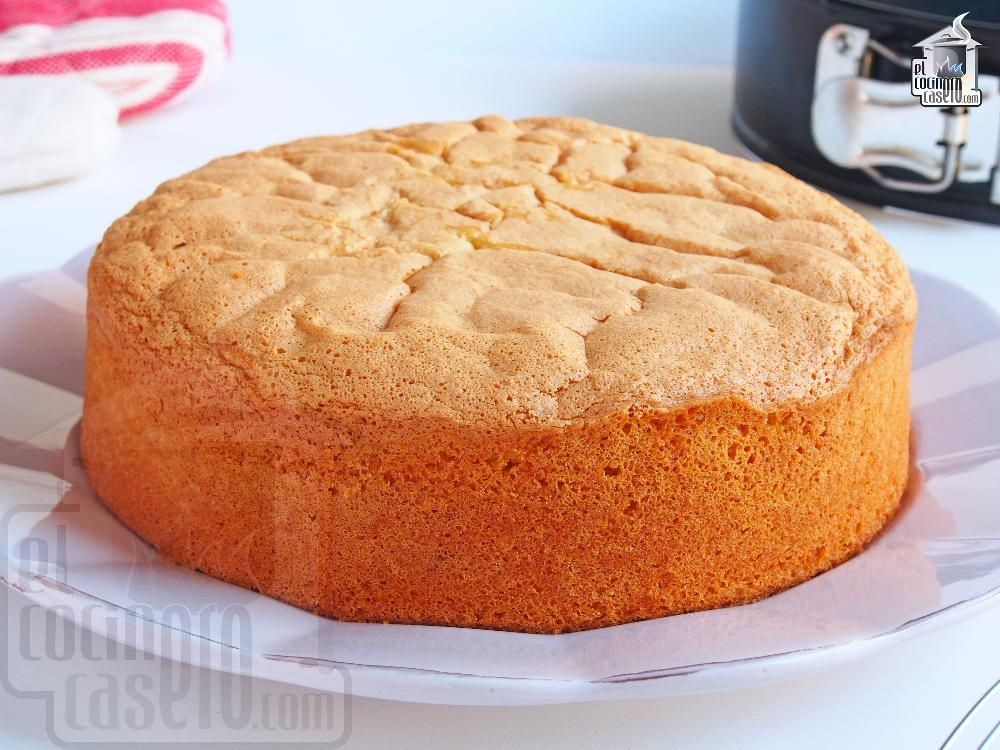

Bizcochuelo 1, 2, 3, 4
Ingredientes:
- 1 pote de crema de leche
- 2 potes de azúcar
- 3 potes de harina
- 4 huevos
- 1 escencia de vainilla (opcional)
(los primeros tres ingredientes se pueden medir con tazas o con el mismo pote en el que viene la crema de leche)
Preparación:
- Precalentar el horno a 180º durante aproximadamente 15 minutos.
- Enmantecar y enharinar un molde.
- En un bol batir el huevo y el azúcar hasta que este último se diluya por completo y la mezcla tenga un color blancuzco.
- Añadir la crema y la escencia de vainilla.
- Colocar la harina y mezcla SIN BATIDORA de manera envolvente hasta obtener una mezcla homogénea.
- Poner la mezcla en el molde previamente enmantecado y enharinado.
- Dejar cocinar entre 30 y 40 minutos.
- Decorar al gusto.
